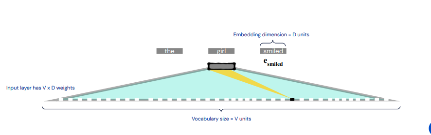
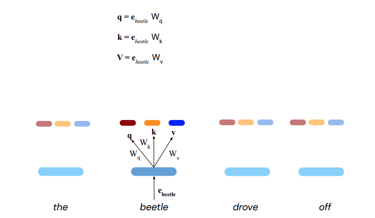
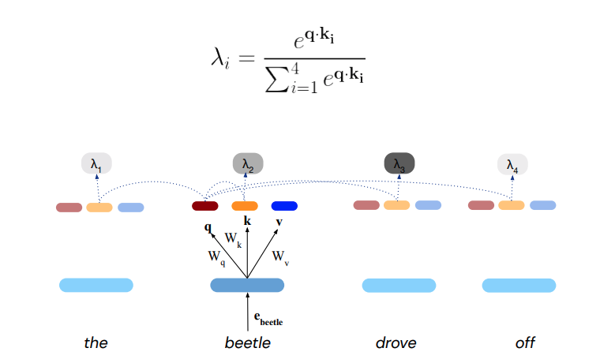
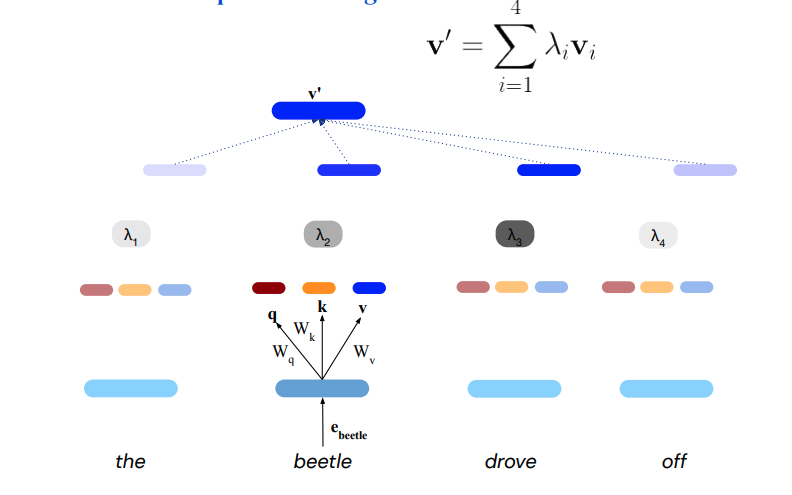
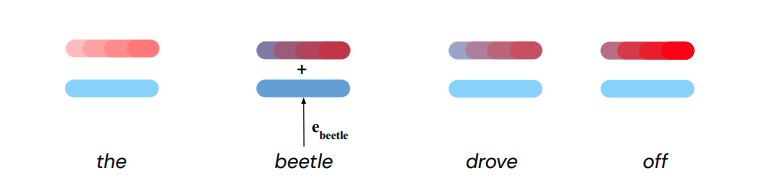
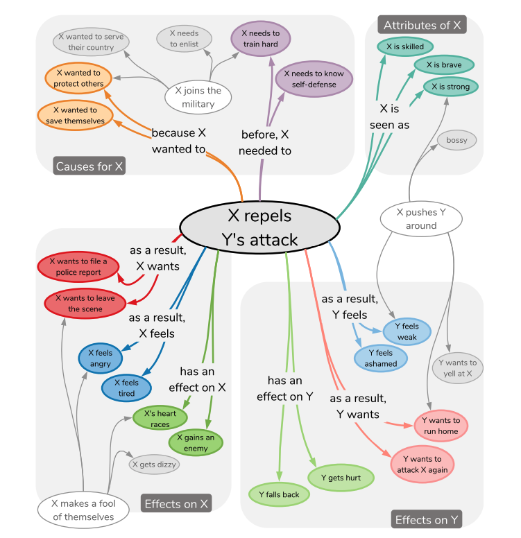
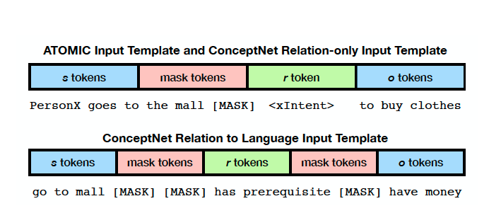

Atomic Dataset: Reading annotation examples on webpage will suffice. The paper presents a pretty decent data collection strategy.
ConceptNet: Understand the entities and relationships. Just explore the web interface. For a deep dive, go to the paper. Pretty mature dataset.
BLEU-Score: BLEU (bilingual evaluation understudy) is an algorithm for evaluating the quality of text which has been machine-translated from one natural language to another. BLEU compares the n-gram of the candidate translation with n-gram of the reference translation to count the number of matches. These matches are independent of the positions where they occur. The more the number of matches between candidate and reference translation, the better is the machine translation. See Algorithm.
Beam Search: Beam search is a heuristic search algorithm that explores a graph by expanding the most promising node in a limited set. Select the most probable events at each decision step.
The first pass
Category: The paper defines a new downstream task for language models. It uses transformers for open world knowledge graph creation.
Context:
Knowledge Base Construction is a long standing problem in AI. Some other related areas are:
Semi structured text extraction into relational schemas
Open Information Extraction Approaches do open entities and relations but they are limited to extractive capture
Large scale language model for downstream task (Named Entity Recognition, Part of Speech Tagging etc.
Correctness:
The paper aims at constructing knowledge graphs by fine-tuning pretrained language models. It aims at creating a global intuitive knowledge. I am a bit unsure of the applicability and correctness of such an approach.
Contributions:
Put forth common sense acquisition as knowledge base construction.
A generative approach to knowledge base construction
A framework for using large scale transformers for to produce Knowledge bases
Empirical study of the quality of generated knowledge bases
Clarity:
I have a clear picture of how I would approach the problem. I would start by collecting product graphs and product descriptions from e-commerce websites. Transform them into some sort of encoding decoding mechanism, model a generative task and fine tune the transformer. However I am still unclear as to the tuple related details of the paper.
Another good source of dataset would be encyclopaedic taxonomies (such as Class 9 diversity chapter) or maybe family trees (synthetic descriptions and stuff). So yeah, the directions seems intuitive and clear.
The Second Pass
COMET is a generative model and uses a seed set of knowledge tuples in order to get trained.
Task:
COMET is given a knowledge base of natural language tuples. $\{s,r,o\}$ tuples.
$s$: Subject phrase (eg: s="Take a nap")
$r$: Relation of the tuple (eg: r= "Causes")
$o$: Object of the tuple (eg: o = "have energy")
The task is to generate $o$ given $s$ and $r$
Transformer Basics: Let's take a look at the forward pass for the transformer model.
Each word is first converted to a D-dimensional embedding similar to all language models.
Source : Felix Hill Deepmind
Each embedding is then converted into a set of $[ \mathbf{q},\mathbf{k},\mathbf{v}]$
$\mathbf{q}$: query vector
$\mathbf{k}$: key vector (like hash)
$\mathbf{v}$: value vector (like content)
Source: Felix Hill (Deepmind)
Self attention($\lambda$) calculation using $\mathbf{q}$ of the current word and $\mathbf{v}$ of the surrounding words.
Source: Felix Hill (Deepmind)
Next layer vector calculation using $\lambda$ and $\mathbf{v}$ vectors.
Source: Felix Hill(Deepmind)
Since, transformer is temporally invariant, we introduce a slight location bias before and/or after every transformer block.
Caption
The Datasets: The datasets are essentially graphs represented in (Node, Relation, Node) form. Here are the examples:
ATOMIC: eg tuple: ("go to mall", "has prerequisite", "have money")

Conversion to input tokens is done as follows:
Source: COMET Paper
Loss Function: Crossentropy on object tokens $$ L = - \sum_{t=|s|+|r|}^{|s|+|r|+|o|} \log P(x_t | x_{<t})$$
Metrics (Atomic)
BLEU-2 Score: Compares the 2-gram of the candidate translation with 2-gram of the related relations to count the number of matches. I dont understand this metric a lot. Maybe higher leads to more quality.
$\percentage N/T sro$ : Fraction of generated tuples that are novel. This should be near 100 %.
$\percentage N/T o$: Fraction of generated objects that are novel. This should also be as high as possible for new knowledge
$\percentage N/U o$ Fraction of novel objects to unique objects. This should be high as it represents diversity.
Human Evaluation: Ask AMT workers to identify whether the generated {s,r,o} make sense.
100 randomly selected events
9 attributes for every event
10 candidates using beam search for every (event,attr) combo
=> 5000 ratings for each relation
Significance testing : Pitman's Test (A non parametric permutation significance test)
Baselines-Atomic:
LSTM Seq2Seq encoder decoder.
Ablation
Comet vs Comet (-pretrained)
Effect of decoding schemes : Greedy vs Beam vs top-k
Results for ATOMIC
Beats baseline on BLEU-2 as well as Human Evaluations
More new objects and tuples than baseline
Interesting trends wrt amount of training data. Works with low data as well.
Network initialised with GPT2 weights improves the metric
COMET could be effective with humans in loop owing to beam search.
Table 5 shows novel tuples which seem pretty reasonable
Metrics For ConceptNet
PPL
Accuracy of the knowledge being correct by the Bilinear AVG model: Achieves 92.5% accuracy
Similar novelty metrics as Atomic
Human Evaluation - similar to ConceptNet
Baselines for ConceptNet
BiLSTM
LSTM -s
Ablations
Pretraining
Relation embedding (Comet RelTok) vs Natural Language Embedding (Main Model)
Results
Low PPL
High Accuracy
Novel - some times simplified objects
Edit distance comparisons show that generated tuples are within sufficient distance from the train tuples
Clear advantages to pretraining (Dove example)
Extension Ideas
Contextualised common sense: At the present the model is trying to learn global/ general truths. It is memorising what usually happens. It would be nice to see models developing common sense in a contextual setting. This is different from when you apply the model on every sentence of the context.
Knowledge Base Assisted Neural Networks: Can neural networks be designed to take help from these large Knowledge Graphs such as ConceptNet?
Probabilistic associations with these knowledge graphs.
Adversarial attack on the model by shuffling the dataset and then seeing if it is merely fitting a function. For every {s,r} select a random o.